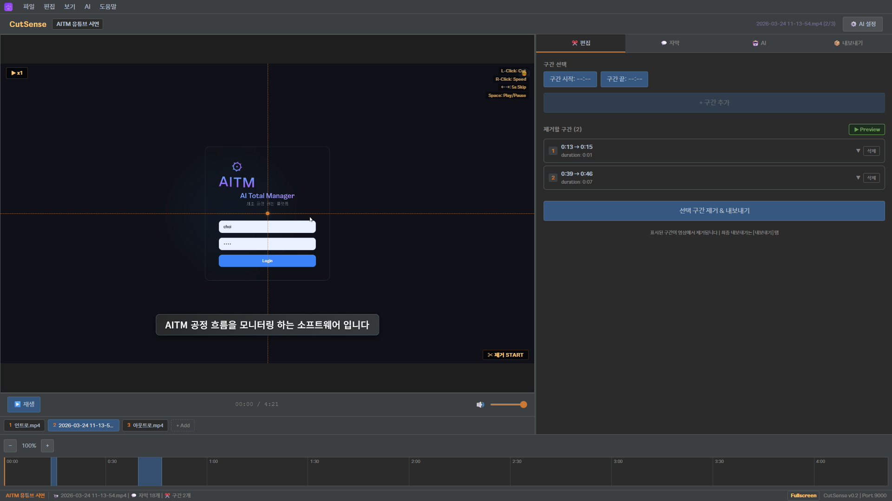
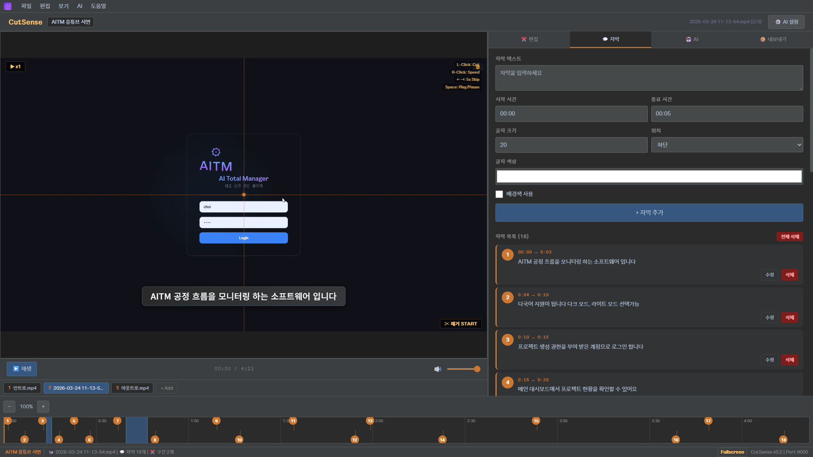
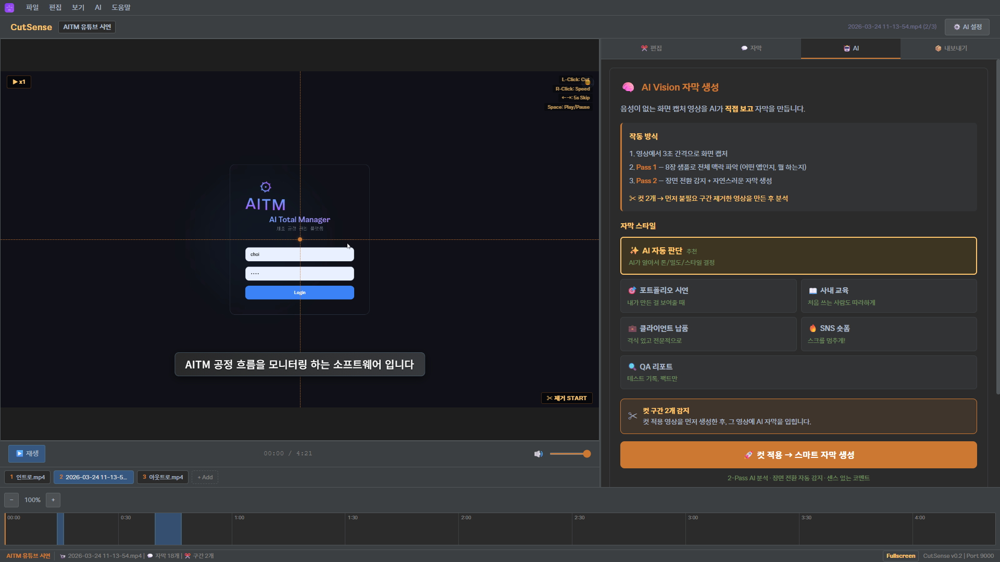

InnoForge Inc.
full-stack development
Differentiation
기존 편집기와 무엇이 다른가
| 기능 | 기존 편집기 (CapCut, Vrew 등) | CutSense |
|---|---|---|
| 자막 생성 방식 | 음성 인식 (STT) | 화면을 보고 생성 (Vision AI) |
| 음성 없는 영상 | 자막 생성 불가 | 핵심 대상 |
| 자막 톤/스타일 | 수동 편집 | 6종 자동 전환 (포트폴리오, 교육, 납품 등) |
| 장면 전환 감지 | 수동 분할 | AI 자동 감지 (3-Pass) |
| 적합 용도 | 브이로그, 인터뷰 등 음성 콘텐츠 | SW 시연, 포트폴리오, 교육, QA 기록 |
InnoForge Inc.
vision-based subtitle generation
Core Flow
영상 편집 전체 워크플로우
1
영상 드래그 앤 드롭
프로젝트 생성 → 영상 파일 드롭 → 서버 업로드. 멀티 영상 동시 로드, 드래그로 순서 변경 가능.
2
좌클릭으로 불필요 구간 제거
좌클릭 2번으로 제거 구간 설정 (시작/끝). 우클릭 배속 순환, 화살표 5초 점프. 실시간 스톱워치로 컷 길이 확인.
3
AI Vision 3-Pass 자막 생성
Pass 1: 8장 샘플로 영상 맥락 파악 → Pass 2: 장면 경계 자동 감지 → Pass 3: 장면별 자막 생성. 6종 스타일 중 선택.
4
내보내기 (컷 + 자막 + 인코딩)
3단계 파이프라인: 구간 제거 → 자막 번인(drawtext) → 포맷/화질/해상도 인코딩. 가로(16:9), 세로(9:16), 둘 다 지원.
Features
핵심 구현 기능
3-Pass Vision AI 자막
맥락 파악 → 장면 경계 감지 → 자막 텍스트 생성. Claude/Grok 듀얼 API 지원. 화면만 보고 자막 생성.
6종 자막 스타일
AI 자동 판단, 포트폴리오, 사내 교육, 클라이언트 납품, SNS 숏폼, QA 리포트 — 용도에 맞는 톤과 밀도 자동 전환.
구간 미세 조절
아코디언 UI로 각 구간 펼쳐서 ±1s, ±0.1s 단위 조절. 프리뷰 재생으로 보존 구간만 순서대로 확인.
멀티 영상 병합 내보내기
여러 영상을 프로젝트에 추가, 드래그로 순서 변경. 각 영상별 컷+자막 적용 후 하나로 병합 내보내기.
프로젝트 자동 저장 + 복원
2초 debounce 자동 저장. 새로고침(F5) 시 가장 최근 프로젝트 자동 복원. 편집 상태 손실 없음.
PWA + Darcula 테마
Chrome 설치형 앱(PWA) 지원. Android Studio 풍 Darcula 다크 테마. Happiness Sans 폰트.
InnoForge Inc.
ai-powered video editing
Screenshots
앱 화면 — 실제 작동 흐름
AITM 시연 영상을 편집하는 실제 화면입니다. 영상 로드 → 컷 편집 → AI 자막 생성까지의 전체 흐름.

STEP 1편집 탭 — 좌클릭으로 제거 구간 설정, 미세 조절(±0.1s), 프리뷰 재생으로 결과 확인

STEP 2자막 탭 — AI가 생성한 18개 자막, 타임라인 마커 연동, 싱크 미세조절(±0.1s), 인라인 텍스트 편집

STEP 3AI 탭 — 6종 자막 스타일 선택, 컷 구간 자동 감지, 3-Pass Vision 분석으로 자막 자동 생성
InnoForge Inc.
built to ship
AI Architecture
3-Pass Vision AI 자막 생성 구조
1
Pass 1 — 전체 맥락 파악
영상에서 8장을 균등 샘플링하여 AI에 전달. "어떤 앱인지, 뭘 시연하는지, 전체 흐름은 어떤지" 3~5줄로 요약.
2
Pass 2 — 장면 경계 감지
전체 프레임을 16장씩 배치로 AI에 전달. "화면이 의미 있게 바뀌는 시점"만 감지. 스크롤, 입력 등 무의미한 변화는 무시.
3
Pass 3 — 장면별 자막 생성
감지된 장면마다 대표 프레임 1~2장 + 맥락 + 스타일 요약을 전달. "자막이 도움 되면 생성, 안 되면 null" — 과잉 자막 방지.
비용 최적화
5초 간격 프레임 추출, 단일 FFmpeg 호출로 속도 5~10배 향상. 4분 영상 기준 약 $0.43. 실행 전 예상 비용 팝업으로 확인.
InnoForge Inc.
optimized for cost
Tech Stack
사용 기술
Frontend
React 18 + Babel + Tailwind CSS
Backend
Python FastAPI + WebSocket
AI
Claude Vision + Grok Vision (듀얼)
Video
FFmpeg subprocess (Windows 호환)
Theme
Darcula (Android Studio 풍)
Font
Happiness Sans (해피니스 산스)
PWA
Service Worker + manifest.json
Security
Path Traversal 방어 + CORS 제한
InnoForge Inc.
manufacturing meets software
Why This Exists
왜 이 편집기를 만들었나
포트폴리오 시연 영상을 만들 때마다 같은 문제에 부딪혔습니다. 화면을 녹화하면 음성이 없고, 음성이 없으면 기존 편집기의 자동 자막 기능이 작동하지 않습니다. 결국 수십 개 자막을 하나하나 수동으로 입력해야 했습니다.
CutSense는 이 문제를 해결합니다. AI가 화면을 직접 보고 장면 전환을 감지하고, 시청자에게 필요한 자막을 자동 생성합니다. 편집기를 배우는 시간 대신, 편집기를 직접 만들었습니다.
InnoForge Inc.
from idea to production
Development
1인 풀스택 개발
기획 · 설계 · 프론트엔드 · 백엔드 · AI 프롬프트 엔지니어링 — 전 과정 단독 수행
AI Vision 자동 자막
영상 편집 자동화
포트폴리오 시연 영상
사내 교육 영상
데스크톱/웹 앱 개발
비슷한 시스템이 필요하시면 크몽 메시지로 문의 주세요
요구사항 분석부터 배포까지 직접 수행합니다